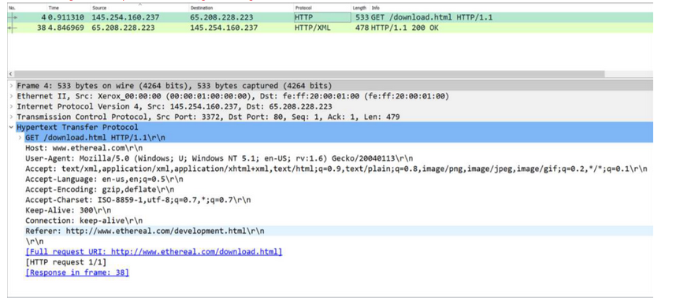
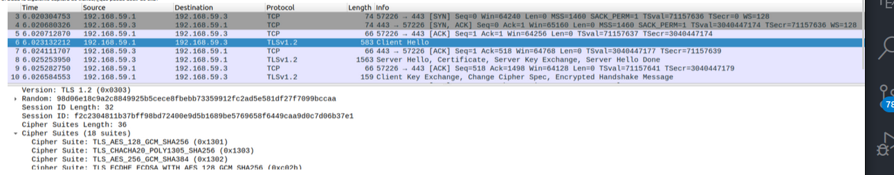
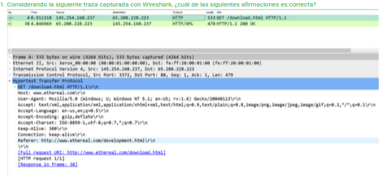
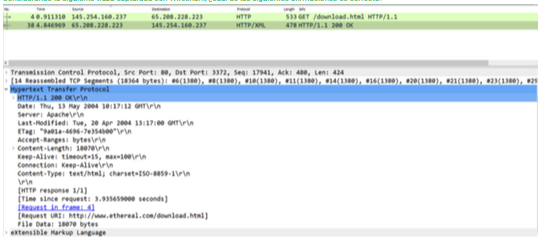
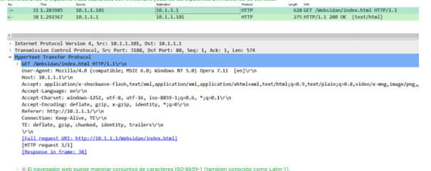
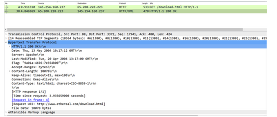

16.Considerando la siguiente traza capturada con Wireshark, ¿cuál de las siguientes afirmaciones es correcta?

Titulación: Ingeniería en Informática + ADE
Autor: Ismael Sallami Moreno
Asignatura: Fundamentos de Redes
Temario: Práctica 3
1.¿Cómo es capaz el servidor HTTP Apache2 de discernir si una petición se dirige a un determinado sitio (virtual host) u otro, previamente configurados y con nombre de dominio diferentes?
2.¿Cuál es la carpeta en la que se almacenan los hosts virtuales de un sitio web gestionado mediante Apache2?
3.Considerando la siguiente traza, ¿cuál de las siguientes afirmaciones referentes al archivo de configuración, localizado en el directorio /etc/apache2/sites-available/, del correspondiente virtual host es correcta?
4.Se ha implementado el acceso autorizado de un sitio web en Apache2 usando una metodología de autenticación básica con el siguiente fichero .htaccess, ¿qué comando usaría para crear el correspondiente fichero de contraseñas?AuthType Basic
AuthName "Directorio con control de acceso"
AuthUserFile "/usr/local/apache/passwords"
Require user mew
5.Suponga que queremos crear la clave privada y el certificado electrónico autofirmado de un sitio web en el directorio /home/administrador/Descargas utilizando openssl. El certificado debe tener una validez de 30 días y la clave privada debe tener una longitud de 1024 bits. ¿Qué comando usaría?
6.¿Cuál de los siguientes comandos usaría para crear un enlace simbólico del archivo de configuración fr.com.conf en el directorio /etc/apache2/sites-enabled/?
7.Considerando la siguiente traza capturada con Wireshark, ¿cuál de las siguientes afirmaciones es correcta?
8.Dada la siguiente captura de tráfico, ¿qué puede decir de ella?
9.Si quisiéramos restringir el acceso a una carpeta llamada zonaprivada dentro de un dominio llamado nuevodominio gestionado por Apache2, ¿qué deberíamos hacer de entre estas opciones?
10.Suponga que se usa la utilidad openssl como sigue para generar el certificado electrónico de un sitio web, ¿cuál de las siguientes afirmaciones referentes al archivo de configuración, localizado en el directorio /etc/apache2/sites-available/, del correspondiente virtual host es correcta?sudo openssl req -x509 -nodes -days 365 -newkey rsa:2048 -keyout /usr/fr.key -out /usr/fr.crt
11.Dada la siguiente directiva de un servidor Apache ubicada en su fichero de configuración apache.conf,
Options Indexes FollowSymLinks
AllowOverride None
Require all granted
¿cómo la modificaría para permitir interpretar ficheros de autorización .htaccess únicamente en el directorio /var/www/ejemplo/?
12.Un servidor HTTP Apache2 tiene configurado el siguiente sitio (virtual host) tal que,ServerName ejemplo.com
ServerAlias www.ejemplo.com
ServerAdmin webmaster@ejemplo.com
DocumentRoot /var/www/ejemplo.com/
Options -Indexes +FollowSymLinks
AllowOverride All
ErrorLog ${APACHE_LOG_DIR}/ejemplo.com-error.log
CustomLog ${APACHE_LOG_DIR}/ejemplo.com-access.log combined
¿Qué cabecera HTTP tendría que enviar el cliente al servidor y con qué valor para que ser pueda servir la página de inicio del sitio?
13.Un servidor Apache2 escucha peticiones HTTP en la IP 192.168.1.5 perteneciente a la red de gestión del laboratorio 3.7 y tiene alojado y configurado el sitio web www.ejemplo.com ¿es necesaria una configuración adicional para servir la página web por defecto de dicho sitio web? Si es así, ¿qué es lo que hay que configurar?
14.¿Cómo se autentica el servidor HTTPS ante el cliente para formar un canal seguro de comunicaciones?
15.Suponga que se usa la utilidad openssl como sigue para generar el certificado electrónico de un sitio web, ¿cuál de las siguientes afirmaciones referentes al archivo de configuración, localizado en el directorio /etc/apache2/sites-available/, del correspondiente virtual host es correcta?sudo openssl req -x509 -nodes -days 365 -newkey rsa:2048 -keyout /usr/fr.key -out /usr/fr.crt
16.Considerando la siguiente traza capturada con Wireshark, ¿cuál de las siguientes afirmaciones es correcta?
17.Un sitio web alojado en un servidor HTTP tiene configurada una zona restringida. Para que se pueda acceder a la zona restringida, es necesario introducir las credenciales del usuario en concreto, previamente configurado. Si un atacante pudiera interceptar las comunicaciones entre el cliente y el servidor, ¿podría ser capaz de obtener dichas credenciales y utilizarlas para suplantar la identidad de dicho usuario?
18.¿Qué comando usaría para habilitar el módulo mod_ssl de Apache2?
19.¿Qué protocolo se utiliza para resolver un nombre de dominio en concreto?
20.¿Qué servicios de seguridad garantiza el protocolo TLS?
21.Considerando la siguiente traza capturada con Wireshark, ¿cuál de las siguientes afirmaciones es correcta
22.Si quisiéramos configurar un host virtual llamado nuevodominio.es, ¿en qué fichero incluiríamos su configuración?
23.Considerando la siguiente traza capturada con Wireshark, ¿cuál de las siguientes afirmaciones es correcta?
24.Cuál de las siguientes afirmaciones es cierta cuando creamos un certificado con openssl para un sitio web servido con Apache2?
25.¿Cuál es la carpeta en la que se almacena por defecto el contenido de un sitio web gestionado mediante Apache2?
26.Considerando la siguiente traza capturada con Wireshark, ¿cuál de las siguientes afirmaciones es correcta?
27.Considerando la siguiente traza capturada con Wireshark, ¿cómo se configuró el fichero .htaccess del sitio web?
28.Suponga que se usa la utilidad openssl como sigue para generar el certificado electrónico de un sitio web, ¿cuál de las siguientes afirmaciones referentes al archivo de configuración, localizado en el directorio /etc/apache2/sites-available/, del correspondiente virtual host es correcta?sudo openssl req -x509 -nodes -days 365 -newkey rsa:2048 -keyout /usr/fr.key -out /usr/fr.crt
29.¿Cuál es el archivo de principal en el que se configuran los puertos en los que atenderá solicitudes Apache2?
30.¿Cuál de los siguientes comandos usaría para crear un enlace simbólico del archivo de configuración fr.com.conf en el directorio /etc/apache2/sites-enabled/?
31.Considerando la siguiente traza capturada con Wireshark, ¿cuál de las siguientes afirmaciones es correcta?
32.Suponga que se usa la utilidad openssl como sigue para generar el certificado electrónico de un sitio web, ¿cuál de las siguientes afirmaciones referentes al archivo de configuración, localizado en el directorio /etc/apache2/sites-available/, del correspondiente virtual host es correcta?sudo openssl req -x509 -nodes -days 365 -newkey rsa:2048 -keyout /usr/fr.key -out /usr/fr.crt